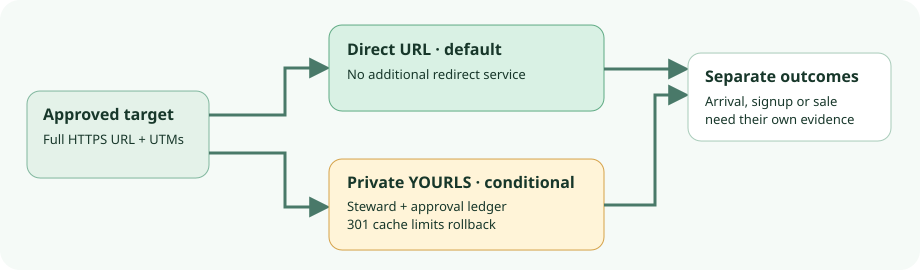

YOURLS 1.10.6 · tagged-source audit · 11 Oct 2026
For one campaign link, use the approved direct URL unless shortening earns its upkeep.
A small team can put stable UTMs in its approved HTTPS destination and send or print that URL directly. Use a private YOURLS redirect only if a shorter, memorable link and controlled retargeting justify a domain, server, database, backups and a separate approval ledger. This report reads tagged source, release notices, advisories and current documentation. No install or redirect was tested.

Choose the link route
| Route | Use when | Work it adds |
|---|---|---|
| Direct approved HTTPS URL with UTMs | Its length is acceptable and post-distribution retargeting is unnecessary. | Keep the canonical URL and exact UTM string in the send or print proof; maintain the destination. |
| Private YOURLS 1.10.6 link | A compact link and controlled target changes are worth a separate service. | Maintain short domain, DNS/TLS, PHP/web server, database, restricted admin/API, secret cookie key, patching, backup/restore, human approval and change records. |
| Public shortening or public stats/API | Not needed for one team-owned link. | Extra abuse and exposure choices; private admin does not by itself make every information/API endpoint private. |
The 1.10.6 release note says it changes the version string from 1.10.5-dev but otherwise has the same code as 1.10.5. The tagged core licence is MIT; plugin and infrastructure terms need their own check.
What the tagged core actually does
- Create: The add-link path checks the supplied long URL and keyword, then stores the target, title, creator IP and zero initial clicks. Under default unique-URL behavior, a duplicate long URL yields the existing short URL with failure status 409; a taken or reserved keyword is a separate 400 collision. Set an explicit title if avoiding automatic title fetching is important. The current configuration guide documents the unique-URL choice.
- Edit: Admin AJAX checks auth in private mode and an edit nonce; the tagged edit function directly updates URL, keyword and title. The inspected core does not contain pending approval, a second signature, a reason field or a prior-target ledger. A plugin could alter this, so this is a core-source limit, not a claim about every installation.
- Redirect: The go path resolves the stored URL, attempts to increment clicks and write a detailed log, then calls the 301 redirect path. It does not first verify that the destination arrived or converted. Because 301 is cacheable, a later edit may not reach every previously exposed client promptly; this is an inference, not a measured cache result.
- UTMs: That path passes the stored URL to the redirect function; it does not pass through the query on the incoming short-link request. Put approved UTMs in the stored long URL, not after the short keyword. Plugins, server configuration and intermediaries could change live behavior; exact query bytes were not tested. See the go call and redirect function.
- Retire: Delete removes the keyword; the unknown-keyword path sends a 302 to the site root. That is not a reversible retire state or a controlled campaign notice. For printed links, an approved notice target may be preferable to deletion.
Approval, rollback and measurement stay outside the redirect
For a fictional keyword autumn-guide, an operator can record an approved, deliberately non-live target such as https://example.invalid/guide?utm_source=print&utm_medium=qr&utm_campaign=autumn-guide. Record the owner, complete target and UTMs, second approver, review date, prior target and change reason in a separate ledger. In a later permissioned local fixture, compare the actual Location and destination from a fresh client before distribution and after any edit. This is an operator protocol, not a YOURLS feature or a test performed here.
A rollback means another reviewed edit to the saved prior target plus response checks. Keep database recovery and domain continuity owned separately. A 301 cache can limit an emergency correction even if the database edit succeeds. The tagged click counter increments on redirect attempts; detailed logging can store time, keyword, referrer, user agent, IP and country unless disabled. Counter and log writes may fail independently. Repeats, bots, scanners and checks can appear in counts. They do not establish distinct people, successful arrival, account creation or sale. Check retention policy before collecting detailed logs; use separate on-site and authoritative account evidence for outcomes.
Before a private installation
The current requirements list PHP 8.1+, MySQL or MariaDB, and Apache with mod_rewrite; separate server guidance also covers nginx. The install guide requires server files, configuration, database and admin setup; the upgrade guide calls for a DB backup first. In the configuration guide, set a unique YOURLS_COOKIEKEY and review private admin, API and stats settings separately. Private/public guidance explains those access modes; the built-in API documentation covers shorturl, expand and stats, not this core admin edit/delete path.
Release and advisory scope is not deployment assurance. Referrer-stats stored XSS is listed patched in 1.10.4; the 1.10.5 notes describe further hardening and the duplicate-URL 409 change. The cookie-key fallback, official-image cookie key and file-inclusion advisories list 1.10.5 patched. Pin and assess the actual deployed artifact and its plugins.
Evidence limit
Tagged GitHub source was read through a browser; a direct shell clone failed on DNS. No executable image, isolated database, redirect request, response header, cookie, cache, query-string preservation, backup restore or alert was observed. Current docs are living guidance, not a 1.10.6 runtime test. The direct-URL off-ramp is a workflow recommendation, not a measured superiority claim. A later fixture should use only approved local bytes and a permissioned domain and database; this report publishes no live test link.